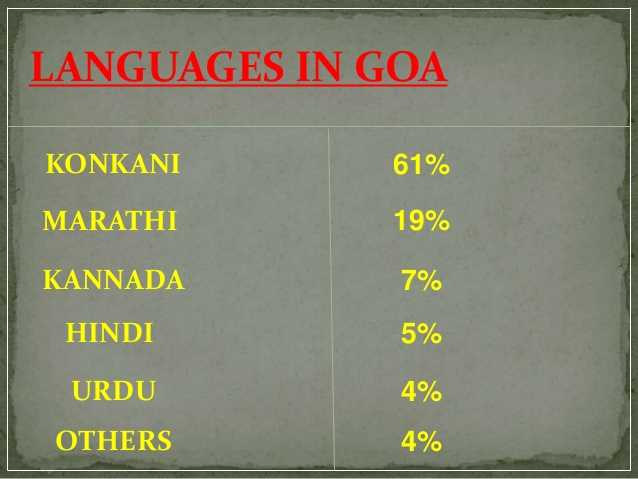

LANGUAGE:
The Goa, Daman and Diu Official Language Act, 1987 makes Konkani in the Devanagari script the sole official language of Goa, but provides that Marathi may also be used "for all or any of the official purposes". Portuguese was the sole official language during Portuguese colonial rule. The government also has a policy of replying in Marathi to correspondence received in Marathi. There have been demands for according Konkani in the Roman script official status in the state. There is widespread support for keeping Konkani as the sole official language of Goa.
Konkani is spoken as a native language by about 66.11% of the people in the state, but almost all Goans can speak and understand Konkani.
Historically, Konkani was neither the official nor the administrative language of the many rulers of the State.
Under The Kadambas kannada and persian under the muslim rule was in practice.later the Vijayanagara empire mandated the use of kannada and telugu.

RELIGION :
According to the 2011 census, in a population of 1,458,545 people, 66.1% were Hindu, 25.1% were Christian, 8.3% were Muslim and 0.1% were Sikh.
The local Indian Christians were called "indiacatos" and the mixed population, mestiços by the Portuguese. The population moved from 64.5% Christian and 35% Hindu in 1851 to 50% Christian and 50% Hindu in 1900, with a steady increase in the Hindu proportion from then onwards.